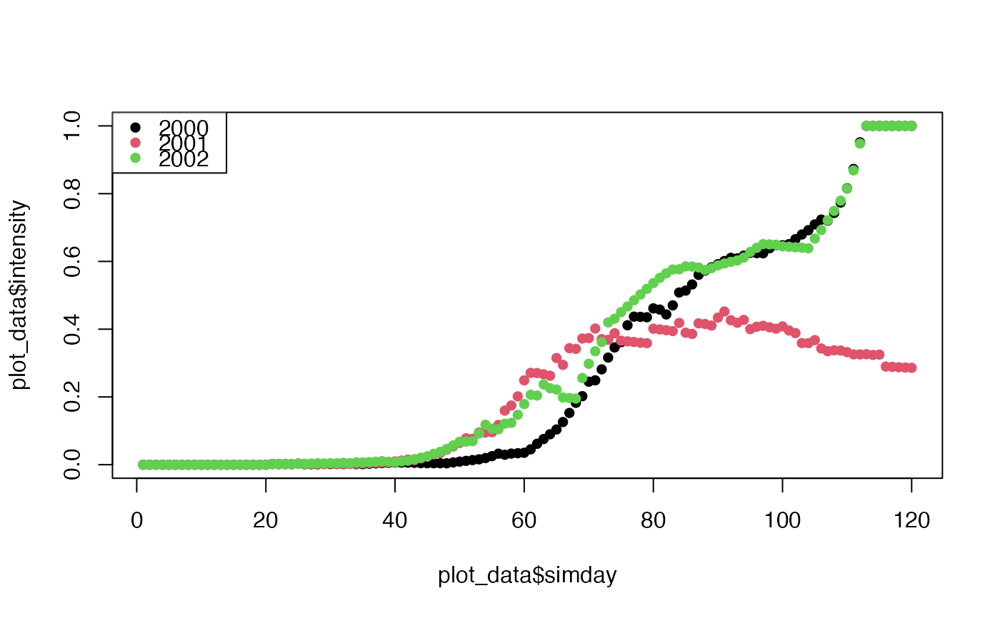

Retrieves daily weather data from either the NASA POWER database or ERA5-Land
reanalysis (via the Open-Meteo Archive API) and formats it for use in
seir() and epicrop disease models.
Usage
get_wth(lonlat, dates, duration = NULL, source = c("power", "era5"))Arguments
- lonlat
Numeric vector of coordinates as
c(longitude, latitude). Longitude: -180 to 180 degrees (West/East) Latitude: -90 to 90 degrees (South/North) Example:c(121.255669, 14.167425)for IRRI, Philippines- dates
Character vector of start date and optional end date, or character scalar start date. Format:
"YYYY-MM-DD"(ISO 8601).Length 1: Use with
durationparameterLength 2+: First is start, second is end (used only if
durationis not supplied)
- duration
Optional integer. Number of days to retrieve (inclusive). If supplied, it takes precedence over any end date in
dates. Must be positive (> 0). If not provided anddateshas only one element, an error is raised.- source
Character. Weather data source, one of
"power"(default) or"era5"(ERA5-Land).
Value
An epicrop.wth object (data.table::data.table() subclass) containing
daily weather data with columns:
| Column | Description | Units |
| YYYYMMDD | Date | ISO 8601 (YYYY-MM-DD) |
| DOY | Day of year | Integer (1-365/366) |
| TEMP | Mean daily temperature | Degrees C |
| TMIN | Minimum daily temperature | Degrees C |
| TMAX | Maximum daily temperature | Degrees C |
| RHUM | Mean daily relative humidity | Percent (0-100) |
| RAIN | Total daily rainfall | Millimeters |
| LAT | Latitude of query location | Degrees (-90 to 90) |
| LON | Longitude of query location | Degrees (-180 to 180) |
Ready for direct use in seir(), bacterial_blight(), leaf_blast(), and
other disease models.
Data Source
"power"(default): NASA POWER vianasapower::get_power(), global daily data from 1984 onwards at 0.5-degree resolution."era5": ERA5-Land (about 0.1°, roughly 10 km) via the Open-Meteo Archive API (https://open-meteo.com/en/docs/historical-weather-api). Hourly values are aggregated to daily values (mean/min/max temperature, mean relative humidity, total precipitation) by local calendar day so that the output matches the POWER-derived columns exactly. ERA5-Land data are typically available with a lag of a few days. ERA5-Land relative humidity is derived from hourly 2m temperature and dew point using the Magnus form of Alduchov and Eskridge (1996).
Both sources are modelled/reanalysis products and may differ from local
weather station observations. Note that ERA5-Land precipitation is not the
same quantity as POWER's bias-corrected PRECTOTCORR, so rainfall totals
will differ between sources.
Retrieved Variables
This function automatically retrieves:
T2M: Mean daily temperature (2-meter height)
T2M_MIN: Daily minimum temperature
T2M_MAX: Daily maximum temperature
RH2M: Mean daily relative humidity (2-meter height)
PRECTOTCORR: Daily precipitation (bias-corrected)
All variables are returned in standard units: temperature in degrees C, humidity in %, rainfall in mm.
Date Handling
Two methods for specifying the weather window:
Start and end dates (character vector):
dates = c("2000-06-30", "2000-12-31")Start date + duration (integer):
dates = "2000-06-30", duration = 120
Duration is interpreted as inclusive days: end = start + duration - 1. For
example, duration = 120 starting on June 30 ends on October 27 (120 days
total).
References
NASA POWER project (2019). Agroclimatology, Prediction Of Worldwide Energy Resource. Funded by NASA's Applied Science Program. https://power.larc.nasa.gov/.
Muñoz-Sabater, J. et al. (2021). ERA5-Land: a state-of-the-art global reanalysis dataset for land applications. Earth System Science Data, 13, 4349-4383. doi:10.5194/essd-13-4349-2021 .
Alduchov, O. A. and Eskridge, R. E. (1996). Improved Magnus form approximation of saturation vapor pressure. Journal of Applied Meteorology and Climatology, 35(4), 601-609. doi:10.1175/1520-0450(1996)035<0601:IMFAOS>2.0.CO;2
Sparks, A. H., P. D. Esker, M. Bates, W. Dall'Acqua, Z. Guo, V. Segovia, S. D. Silwal, S. Tolos, and K. A. Garrett. (2008). Ecology and Epidemiology in R: Disease Progress over Time. The Plant Health Instructor. doi:10.1094/PHI-A-2008-0129-02 .
Author
Adam H. Sparks, adamhsparks@gmail.com with ERA5-Land support adapted from code by Emerson M. Del Ponte delponte@ufv.br from the r4pde.
Examples
# Example 1: Get weather for a date range
# IRRI Zeigler Experiment Station, wet season 2000
wth_range <- get_wth(
lonlat = c(121.255669, 14.167425),
dates = c("2000-06-30", "2000-12-31")
)
head(wth_range)
#> Key: <YYYYMMDD>
#> YYYYMMDD DOY TEMP TMIN TMAX RHUM RAIN LAT LON
#> <IDat> <int> <num> <num> <num> <num> <num> <num> <num>
#> 1: 2000-06-30 182 26.60 23.94 29.89 85.99 11.94 14.16742 121.2557
#> 2: 2000-07-01 183 25.50 24.26 27.39 90.80 22.45 14.16742 121.2557
#> 3: 2000-07-02 184 26.45 24.07 30.09 85.74 14.87 14.16742 121.2557
#> 4: 2000-07-03 185 25.88 24.82 27.53 93.76 19.77 14.16742 121.2557
#> 5: 2000-07-04 186 26.12 24.97 28.08 91.53 12.15 14.16742 121.2557
#> 6: 2000-07-05 187 26.28 25.51 27.70 91.45 21.90 14.16742 121.2557
nrow(wth_range) # Number of days
#> [1] 185
# Example 2: Get weather by start date and duration
# 120-day window from June 30, 2000
wth_duration <- get_wth(
lonlat = c(121.255669, 14.167425),
dates = "2000-06-30",
duration = 120L
)
nrow(wth_duration) # Should be 120 rows
#> [1] 120
# Example 3: Verify both methods return equivalent data
# (within floating-point precision)
all.equal(wth_range[1:120], wth_duration)
#> [1] "Attributes: < Component \"POWER.Dates\": 1 string mismatch >"
# Example 4: Use retrieved weather in disease model
wth <- get_wth(
lonlat = c(121.255669, 14.167425),
dates = "2000-06-30",
duration = 120L
)
# Run bacterial blight model
bb_sim <- bacterial_blight(wth, emergence = "2000-07-01")
#> Error in .window_weather(wth = wth, emergence = emergence, duration = duration): Insufficient weather data to run 120 days after emergence
head(bb_sim)
#> Error: object 'bb_sim' not found
plot(
bb_sim$simday,
bb_sim$intensity,
type = "l",
xlab = "Days After Emergence",
ylab = "Disease Intensity"
)
#> Error: object 'bb_sim' not found
# Example 5: Multiple locations - compare disease risk
locations <- data.frame(
name = c("IRRI_Laguna", "BRRI_Gazipur", "CIMMYT_Mexico"),
lon = c(121.255669, 90.2167, -99.1828),
lat = c(14.167425, 24.0028, 19.1296)
)
# Get weather for each location
wth_list <- lapply(
1:nrow(locations),
function(i) {
get_wth(
lonlat = c(locations$lon[i], locations$lat[i]),
dates = "2000-06-30",
duration = 120L
)
}
)
names(wth_list) <- locations$name
# Run leaf blast model at each location
lb_results <- lapply(
wth_list,
function(w) leaf_blast(w, emergence = "2000-07-01")
)
#> Error in .window_weather(wth = wth, emergence = emergence, duration = duration): Insufficient weather data to run 120 days after emergence
# Compare AUDPC (disease intensity summary)
audpc_comparison <- data.frame(
location = names(lb_results),
AUDPC = sapply(lb_results, function(x) attr(x, "AUDPC"))
)
#> Error: object 'lb_results' not found
audpc_comparison
#> Error: object 'audpc_comparison' not found
# Example 6: Cross-year comparison (same location, different years)
years <- 2000:2002
wth_by_year <- lapply(
years,
function(y) {
get_wth(
lonlat = c(121.255669, 14.167425),
dates = paste0(y, "-06-30"),
duration = 120L
)
}
)
names(wth_by_year) <- as.character(years)
# Run model for each year
bb_by_year <- lapply(
wth_by_year,
function(w) bacterial_blight(w, emergence = unique(w$YYYYMMDD)[1])
)
# Compare disease progression across years
plot_data <- data.table::rbindlist(lapply(
seq_along(bb_by_year),
function(i) {
data.frame(
year = names(bb_by_year)[i],
simday = bb_by_year[[i]]$simday,
intensity = bb_by_year[[i]]$intensity
)
}
))
plot(
plot_data$simday,
plot_data$intensity,
col = as.factor(plot_data$year),
pch = 16
)
legend(
"topleft",
legend = names(bb_by_year),
col = seq_along(bb_by_year),
pch = 16
)

# Example 7: Error handling
if (FALSE) { # \dontrun{
# This will fail (invalid coordinates)
get_wth(
lonlat = c(200, 95), # Out of range
dates = "2000-06-30",
duration = 120
)
# Error: Longitude must be in [-180, 180], got 200
# This will fail (invalid date format)
get_wth(
lonlat = c(121.255669, 14.167425),
dates = "30-06-2000", # Wrong format
duration = 120
)
# Error: dates[1] must be an ISO date ('YYYY-MM-DD')
# This will fail (missing date specification)
get_wth(
lonlat = c(121.255669, 14.167425),
dates = "2000-06-30" # No end date or duration
)
# Error: Provide dates as c(start, end) or supply duration
} # }
# Example 8: era5 data
# Get ERA5-Land data in the same format as POWER
wth_era5 <- get_wth(
lonlat = c(121.255669, 14.167425),
dates = "2000-06-30",
duration = 120L,
source = "era5"
)
head(wth_era5)
#> Key: <YYYYMMDD>
#> YYYYMMDD DOY TEMP TMIN TMAX RHUM RAIN LAT LON
#> <IDat> <int> <num> <num> <num> <num> <num> <num> <num>
#> 1: 2000-06-30 182 26.83750 24.6 30.1 90.00000 10.2 14.1652 121.2465
#> 2: 2000-07-01 183 26.56250 24.9 29.8 88.66667 42.4 14.1652 121.2465
#> 3: 2000-07-02 184 26.30000 24.7 29.3 91.08333 26.2 14.1652 121.2465
#> 4: 2000-07-03 185 26.29167 24.9 29.0 90.75000 25.7 14.1652 121.2465
#> 5: 2000-07-04 186 25.69583 25.1 26.7 93.04167 42.9 14.1652 121.2465
#> 6: 2000-07-05 187 26.28333 25.5 28.7 90.83333 31.9 14.1652 121.2465